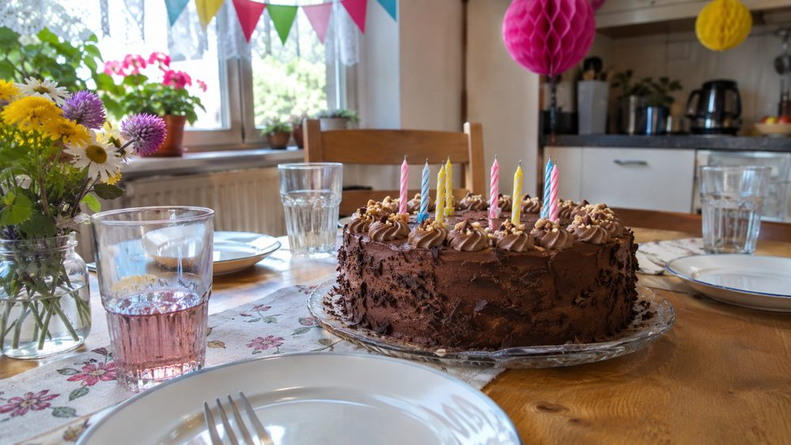

Alex N. · příspěvek 7
2. listopadu 2026Nový playlist do sluchátek 🎧 Dneska mám náladu jen na hudbu a nicnedělání.
Alex N. · příspěvek 6
30. října 2026Víkend u babičky 🌻 Tady bych dokázal bydlet pořád.
Alex N. · příspěvek 5
27. října 2026Zase o kousek výš 🧗 Úterní lezecký trénink od 17 do 19 v hale Stěna se stává nejlepší částí týdne.
 Ilustrační fotografie vytvořená pomocí AI.
Ilustrační fotografie vytvořená pomocí AI.
Školní život · sdílený příspěvek 4
20. října 2026 · Alex sdílíVčerejší turnaj v Lipové nad Jizerou vyhráli druháci ze školy, která má ve znaku ledňáčka.
Účastníci: Gymnázium Na Výsluní (sova), SPŠ Jizerka (ledňáček), Obchodní akademie U Parku (lípa).
Alex N. · příspěvek 3
19. října 2026Naše 2.B dnes vyhrála školní turnaj! 🏆 Na dresech máme ledňáčka, ale létat jsme na hřišti moc neuměli 😂
Alex N. · příspěvek 2
15. října 2026Ranní mlha nad řekou. Kvůli takovým ránům mě focení baví. 📷
Alex N. · příspěvek 1
12. října 2026Díky všem za včerejší oslavu! Ten dort neměl chybu 🎂

Ilustrační fotografie vytvořená pomocí AI.